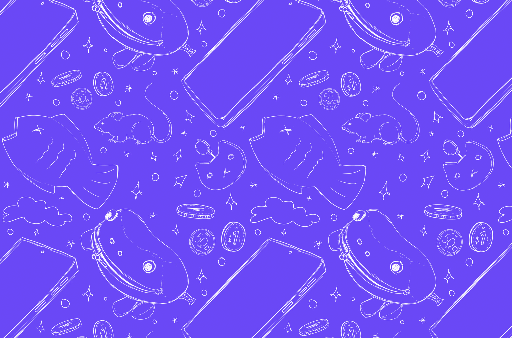
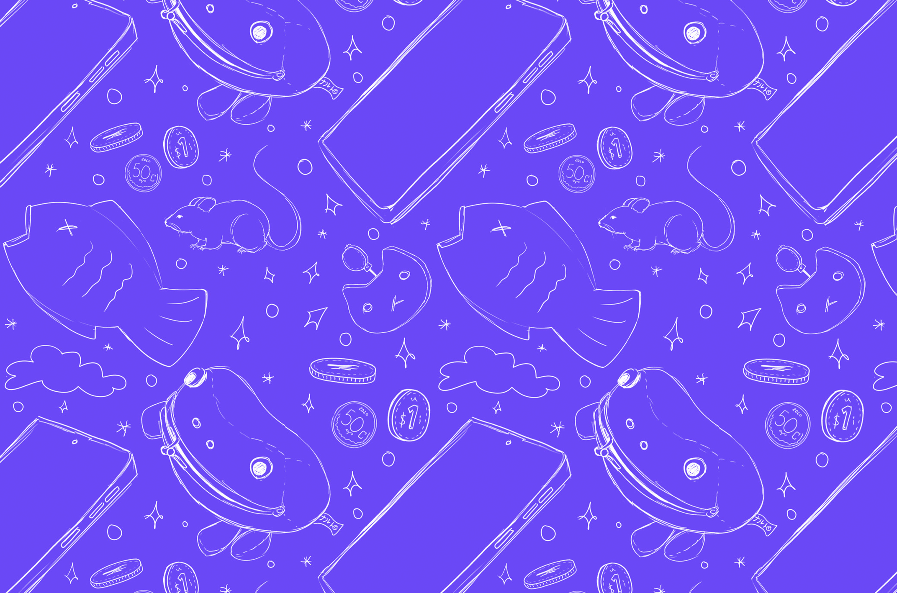

Sobre "Gato de hábitos" + Productos promocionales
Gato de hábitos
"¿La primera vez que nos conocimos?
No lo recuerdo muy bien...
¿Fue hace casi 9, 10 años ya?
Ah. Ya recuerdo.
Fue hace poco más de 8 años en realidad..."


 
